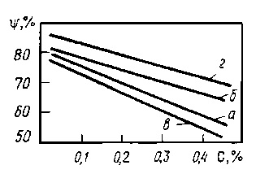

Выполнение холодной объемной штамповки требует гомогенности и однородности структуры стали. Часто используют низкоуглеродистые и среднеуглеродистые стали с небольшим содержанием легирующих элементов.
Для повышения штампуемости сталей типа 40Х, 40ХН, 35ХГНМ большое значение имеет сфероидизация карбидов, которые трудно получить в этих сталях, т.к. требуется сложная длительная предварительная термообработка, а использование этих сталей с пластинчатыми структурами резко снижает стойкость инструмента и предельные возможные деформации. Предварительная обработка давлением обеспечивает гомогенизацию матрицы и сфероидизацию карбидов. Поэтому ее проводят в 2 этапа: сначала гомогенизирующий отжиг, затем обработку на сфероидизацию карбидов. Обычно сфероидизирующий отжиг представляет собой длительную выдержку при температурах близких к точке А1, т.е. 650–700 °С. Если исходная структура – пластинчатый перлит, то сфероидизация идет в 2 этапа. На первом этапе идет деление карбидных пластин на части, второй этап – собственно сфероидизация, укрупнение карбидных частиц путем коалесценции. Этот процесс идет очень медленно и для завершения процесса требуется иногда более 100 ч. Процессы диффузии ускоряются в холоднодеформированных металлах, поэтому сочетание холодной деформации со сфероидизирующим отжигом позволяет сократить длительность этого процесса.
Способность стали к пластической деформации характеризуется поперечным сужением ψ. Показано, что удовлетворительная штампуемость достигается при значениях ψ = 50–60 %. А для холодной штамповки изделий сложной формы ψ не должна быть меньше 75 %. Сфероидизация карбидов повышает штампуемость тем сильней, чем выше содержание углерода. А использование сталей с пластинчатыми структурами значительно снижает штампуемость. Влияние предварительной термической обработки и концентрации углерода в стали на штампуемость (ψ) представлено на следующем графике.
Для сталей, содержащих 0,3–0,5 % углерода (45, 40Х, 30ХГС, 40ХНМА), которые имеют в исходном состоянии ферритно–перлитную структуру с участками бейнита, для повышения штампуемости рекомендуется проводить изотермический отжиг при 750–780 °С с последующим распадом аустенита при температуре 710–680 °С. Иногда может применятся отжиг при подкритическими температурами 650–680 °С в течение 10 часов или улучшение. При этом обеспечивается удовлетворительная штампуемость, но несколько более высокая твердость. Для горячекатаной ленты из стали типа 18ХГТ хорошая штампуемость достигается отжигом при температурах 680–720 °С до 8 ч, что обеспечивает 80 % зернистого перлита. В качестве примера рассмотрим графики отжига заготовок из сталей 12ХН и 16ХГ.
Такая термическая обработка обеспечивает удовлетворительную штампуемость.